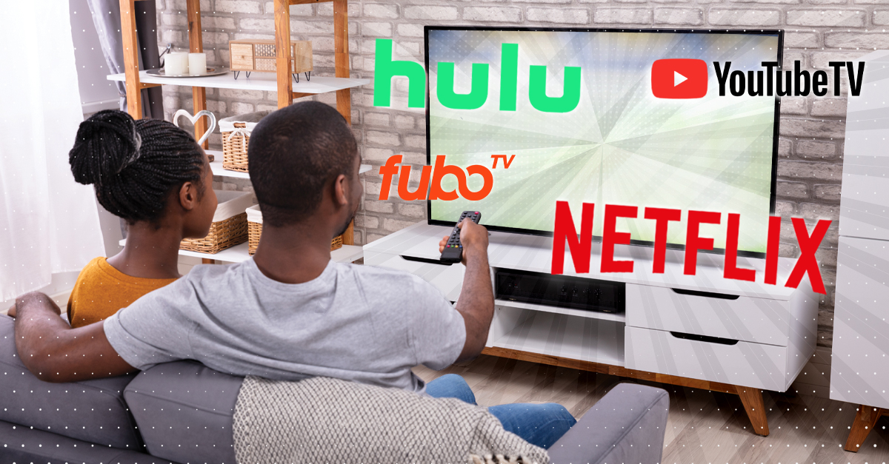

More and more people are “cutting the cord” with traditional cable TV services and moving to television streaming services, instead.
According to a report by PwC Consumer Intelligence, 78% of households use one-or-more streaming platforms, such as Hulu, Netflix, Amazon, YouTube, and many more. These are known as online streaming providers because they connect users to TV programming without a cable connection.
Why consumers are making the “cut”
Cord-cutters are turning to TV streaming services not only because they’re more affordable, but because they add convenience to the watching experience. Viewers can choose what they want to watch, when they want to watch it, and also pause or replay content at will.
A recent survey conducted by ConsumersAdvocate.org showed that, even with an estimated 44% of those surveyed claiming they still have cable TV, all of them said they also use one-or-more TV streaming services. ConsumersAdvocate.org dug dipper to find the three most common reasons the average viewer left cable TV for online streaming:
- To cut costs
- Have increased viewing options
- And the flexibility of watching from home or on-the-go
Cable has traditionally offered packages with hundreds of channels, but some subscribers might only watch a handful of channels on a regular basis. Streaming platforms give consumers the opportunity to be more selective on which channels they’re actually paying for.
With a streaming service, viewers get most of the channels they want and fewer of the channels they don’t—and all at a lower price. By providing a solution to the frustrations of traditional cable services, streaming platforms seized on the opportunity to give consumers what they wanted.
The many benefits of video streaming
As cord cutting has gained popularity, a plethora of streaming services have entered the market to fill the void. Today’s popular streaming providers include platforms such as:
- Netflix
- Hulu
- YouTube TV
- Sling
- Tubi
- Samsung TV Plus
- Amazon Prime Video
- Fubo TV
- Philo
- Disney Plus
- and many more
Each offers a slightly different viewing experience, from the channels and programming you get to how you watch and how much you pay, but almost all of them offer the same primary benefits, such as:
- Cost-effectiveness: online TV streaming is an affordable alternative to cable television
- Convenience: accessible anywhere and on-the-go, can be viewed on various devices, start-up trial periods, quick account set-up, free to cancellations
- Easy customization: flexible parental controls, various channel and network bundles, add-on channels and personal ratings
- Viewing variety: access to TV shows or movies that are no longer airing
It can be difficult to navigate all the streaming choices currently available, however, due to the varied benefits and limitations of each video provider’s service.
Fortunately, ConsumersAdvocate.org has done extensive research on the biggest streaming players in today’s market to bring consumers a detailed comparison of the most popular streaming providers, as well as their top picks for overall service. They even have a side-by-side comparison of what each TV streaming service offers! Pretty cool, right?
Overall, it seems streaming platforms are quickly becoming the new ‘normal’ in television delivery. These video services often cost less than traditional cable or satellite, which means that an increasing number of consumers are making the move to these vital channels. With these streaming services also come OTT services that allow for specific demographic targeting of ads.
OTT ads offer brands big opportunities
OTT is quickly becoming a strong alternative to TV advertising, offering many benefits cable cannot. According to Think with Google, time spent on video streaming has seen a 28% growth year over year. These numbers represent more than half of consumers aged 18-49.
One of the key advantages OTT advertising has over traditional TV commercials is the ability to deliver ads to a targeted audience according to a variety of different characteristics and also track their actions and conversions after the commercial view.
OTT ads are easier for consumers to interact with. This medium of content is being watched across various devices, anywhere, at any time. This means that there is a greater likelihood of people viewing specific ads than there is of people viewing general television ads.
Not only that, but OTT ads are also more convenient. Brands don’t have to assign them to specific ad time slots, where they may only be seen during that specific time. And ads on many streaming platforms also can’t be skipped by users. Since millennials can spend as many as seven hours a day streaming content on their devices, there’s a big opportunity for brands to connect with potential customers.
The future of television is streaming
As technology continues to evolve and offer greater convenience and price points at every turn, more and more consumers will continue to “cut the cord.” And if they’re unsure which streaming service will serve them best, they can easily analyze their options with the help of comparison platform reviews, such as A cord cutter’s guide to finding the best live and on-demand TV streaming services by ConsumersAdvocate.org.
Streaming technology will continue to evolve as more people turn to smart devices rather than traditional TV. Television still reaches millions of consumers, of course, but with the growing popularity of “cutting the cord,” combined with highly-targeted (and cost-effective) digital ad opportunities, one thing seems clear: Consumers are turning to online streaming as their primary source of video programming. Welcome to the new normal.